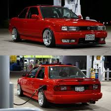

🚙💨TZUSURO TUNEADO🚙💨 |
|---|

El Nissan Tsuru tuneado es un clásico del tuning en México, ya que su diseño compacto y su mecánica sencilla lo hacen ideal para modificaciones.
Kits aerodinámicos: Se pueden instalar fascias deportivas, faldones laterales y difusores traseros para mejorar la estética y aerodinámica.
Alerones: Desde pequeños spoilers hasta alerones grandes tipo GT para darle un look más agresivo.
Pintura personalizada: Colores metálicos, mate o con efectos especiales como camaleón o perlado.
Vinilos y gráficos: Diseños personalizados que pueden incluir patrones, logotipos o detalles en fibra de carbono.
Faros y luces LED: Modificaciones en la iluminación para un aspecto más moderno y llamativo.
Suspensión modificada
Suspensión de aire: Permite ajustar la altura del vehículo con un sistema neumático, ideal para un look más deportivo y versátil.
Suspensión rebajada: Se instalan resortes más cortos o coilovers para reducir la altura del Tsuru y mejorar la estabilidad en curvas.
Amortiguadores deportivos: Se pueden instalar amortiguadores de alto rendimiento para mejorar la respuesta del vehículo en carretera.
Bujes y bieletas reforzadas: Ayudan a mejorar la durabilidad y el desempeño de la suspensión.
Kit de suspensión completa: Incluye amortiguadores, resortes y componentes reforzados para una mejora integral.
Rines y llantas
Tamaño estándar: Los rines originales del Tsuru suelen ser 13 pulgadas, pero muchos entusiastas los cambian por 14, 15 o incluso 17 pulgadas para un look más deportivo.
Material: Puedes encontrar rines de aluminio para mayor ligereza y rendimiento, o de acero para mayor resistencia.
Diseños populares: Rines negros mate, cromados, maquinados o con detalles en colores personalizados.
Medida estándar: La medida original es 175/70R13, pero también se pueden usar 185/60R14 o 195/50R15 dependiendo del tipo de rin.
Marcas recomendadas: Tornel, Michelin, Goodyear, Hankook y Nexen ofrecen llantas de buena calidad para el Tsuru.
Tipos: Llantas deportivas, todo terreno o de alto rendimiento según el uso que le quieras dar.
Iluminación mejorada
Faros LED: Ofrecen mayor intensidad y durabilidad en comparación con los halógenos tradicionales.
Luces neón y RGB: Se pueden instalar en el interior o debajo del vehículo para un efecto visual llamativo.
Faros de ojo de ángel: Un diseño elegante que le da un toque deportivo al Tsuru.
Calaveras deportivas: Con luces LED para una mejor visibilidad trasera.
Iluminación del tablero: Se pueden cambiar los focos del cluster para una apariencia más moderna.
Motor mejorado
Cambio de motor: Algunos entusiastas instalan un motor GA16DE de 16 válvulas, que ofrece mejor potencia y eficiencia.
Filtro de alto flujo: Mejora la entrada de aire al motor, aumentando la respuesta y el desempeño.
Escape deportivo: Reduce la restricción de gases y mejora la aceleración.
Reprogramación de ECU: Ajusta los parámetros del motor para optimizar el rendimiento.
Turbos y supercargadores: Para quienes buscan un aumento significativo de potencia.
Cambio de bujías y cables de alto rendimiento